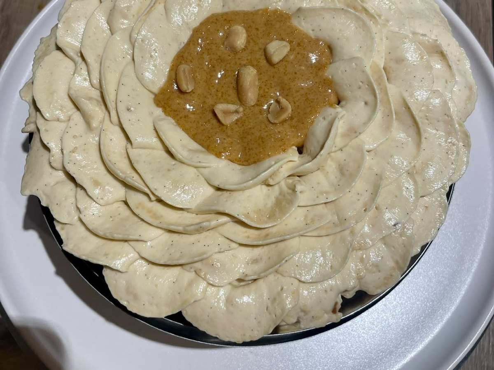

Pâtisserie · Entremets
L'irrésistible cacahuète
595kcal / part
6parts
11,2 gprotéines
31,1 gglucides
Ingrédients
- Praliné cacahuète (il en restera)
- 400 g de cacahuètes
- 180 g de sucre blanc
- 3 g de fleur de sel
- Vanille torréfiée (QS)
- Biscuit moelleux amande — mélange 1
- 1 œuf entier
- 30 g de poudre d'amande
- 10 g de sucre glace
- 25 g de praliné cacahuète
- 8 g de maïzena
- 25 g d'amandes
- 45 g de beurre noisette
- Biscuit moelleux amande — mélange 2
- 30 g de blancs d'œufs
- 20 g de sucre cassonade
- Caramel salé (il en restera)
- 140 g de sucre blanc
- 100 g de beurre demi-sel
- 120 g de crème entière 33% MG
- 3 g de fleur de sel
- 1/2 gousse de vanille
- Crémeux vanille
- 160 g de crème
- 30 g de jaunes d'œufs
- 20 g de sucre vergeoise
- 30 g de beurre demi-sel
- 2 g de gélatine
- 1 gousse de vanille
- Crème pâtissière vanille
- 200 g de lait entier
- 40 g de jaune d'œuf
- 30 g de sucre vergeoise
- 18 g de maïzena
- 6 g de gélatine feuille
- 1/2 gousse de vanille
- 40 g de beurre demi-sel
- Chantache
- 100 g de crème chaude 33% MG
- 300 g de crème froide 33% MG
- 20 g de sucre glace
- 20 g de chocolat blanc
- 1/2 gousse de vanille
- 4 g de gélatine feuille 200 bloom
- crème nuage
- 390 g de crème pâtissière
- 120 g de chantache
- Praliné cacahuète (à votre goût)
- Praliné croustillant
- 200 g de praliné cacahuète
- 100 g de feuillantine
- Confiture de lait vanille
- 100 g de lait concentré sucré
- 100 g de lait concentré non sucré
- 1 gousse de vanille
- Xanthane (QS, environ 1 g)
Préparation
- Praliné cacahuète : torréfiez les cacahuètes puis laissez-les refroidir. Réalisez un caramel à sec avec le sucre et laissez-le refroidir également. Mixez le tout jusqu'à obtenir une pâte lisse, puis ajoutez la fleur de sel et la vanille torréfiée. Il en restera pour d'autres desserts.
- Confiture de lait : faites cuire les deux boîtes de lait concentré à la cocotte, ou immergées dans l'eau bouillante, pendant 4 heures. Versez dans un mixeur, ajoutez la vanille puis la xanthane avec parcimonie (gramme par gramme), et mixez jusqu'à obtenir une texture moins liquide.
- Chantache : faites chauffer une partie de la crème. Dans un grand cul-de-poule, déposez le chocolat blanc, le sucre glace, la vanille et la gélatine égouttée. Versez la crème chaude dessus et mixez. Ajoutez ensuite la crème froide et laissez refroidir 12 heures minimum avant de la monter en texture mousse à raser. Si votre crème est à 30% MG, ajoutez 1 g de gélatine.
- Caramel salé : réalisez un caramel à sec bien lisse. Faites chauffer la crème en parallèle, puis ajoutez-la progressivement au caramel. Mélangez à la spatule une bonne minute. Hors du feu, ajoutez le beurre, la vanille et la fleur de sel, mélangez puis mixez pour homogénéiser.
- Crémeux vanille : réalisez une crème anglaise avec la crème, les jaunes et la vergeoise, puis versez-la sur le beurre, la gélatine et la vanille. Mixez et laissez refroidir avant utilisation.
- Crème pâtissière : portez le lait et la vanille à petite ébullition. Versez sur les jaunes, le sucre et la maïzena préalablement mélangés, puis remettez sur le feu en fouettant vivement. Pasteurisez en veillant à ce que la crème bouille au moins 2 minutes. Hors du feu, ajoutez le beurre en morceaux et la gélatine hydratée. Mixez, refroidissez rapidement puis conservez au frigo (3 jours maximum).
- Biscuit moelleux : réalisez un beurre noisette. Concassez les amandes et mélangez-les à tous les ingrédients du mélange 1, puis incorporez le beurre noisette.
- Montez les blancs du mélange 2 bien mousseux, en ajoutant le sucre petit à petit pour obtenir une texture meringuée. Incorporez délicatement le mélange 1 aux blancs montés.
- Versez la préparation dans un cercle à entremets de 16 cm et enfournez 13 à 15 minutes à 180°C. Laissez refroidir.
- Praliné croustillant : mélangez le praliné cacahuète avec la feuillantine.
- crème nuage : lissez la crème pâtissière avec le praliné cacahuète au mixeur. En parallèle, montez la chantache dans une cuve bien froide. Mélangez délicatement les deux masses.
- Montage : chemisez un cercle de 16 cm et 6 cm de haut avec un rhodoïd épais. Pochez la crème nuage sur tout le tour, sur une épaisseur d'1 cm.
- Tapissez le fond de praliné croustillant, déposez le biscuit bien épais par-dessus, puis pochez des points de caramel, de praliné et de confiture de lait. Marbrez le tout.
- Pochez enfin le crémeux vanille pour combler et lisser. Réservez au congélateur.
- Finition : montez la chantache lisse et soyeuse, puis pochez-la sur le gâteau décerclé. Laissez décongeler au réfrigérateur avant dégustation.
L'astuce d'ElsaC'est un entremets d'atelier, à organiser sur 3 jours : praliné et confiture de lait en amont, chantache et insert la veille (les 12h de repos de la chantache ne se négocient pas), montage et finition le jour J. La chantache se congèle très bien, montée ou non : il suffit de la décongeler la veille, puis de la mixer et de la monter le jour même. Recette adaptée de L'Atelier de Chiara, avec un praliné cacahuète à la place du praliné amande 🥜
Voir cette recette en mode cuisine